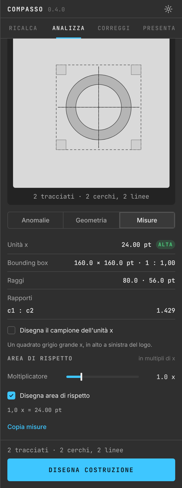
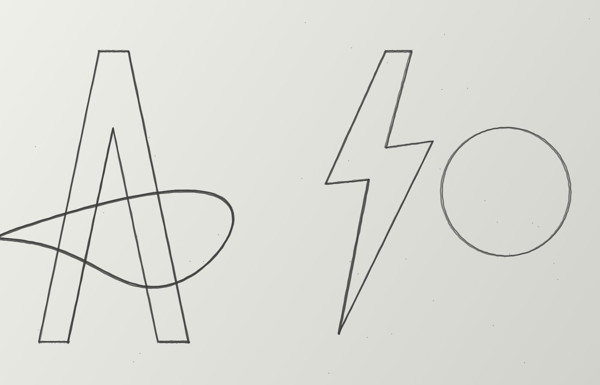
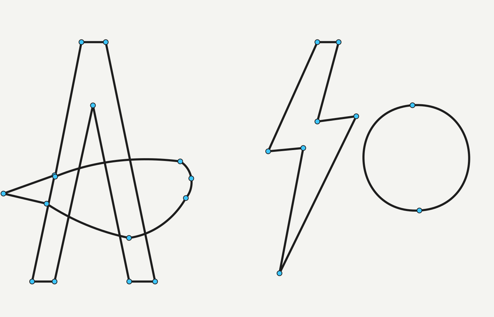
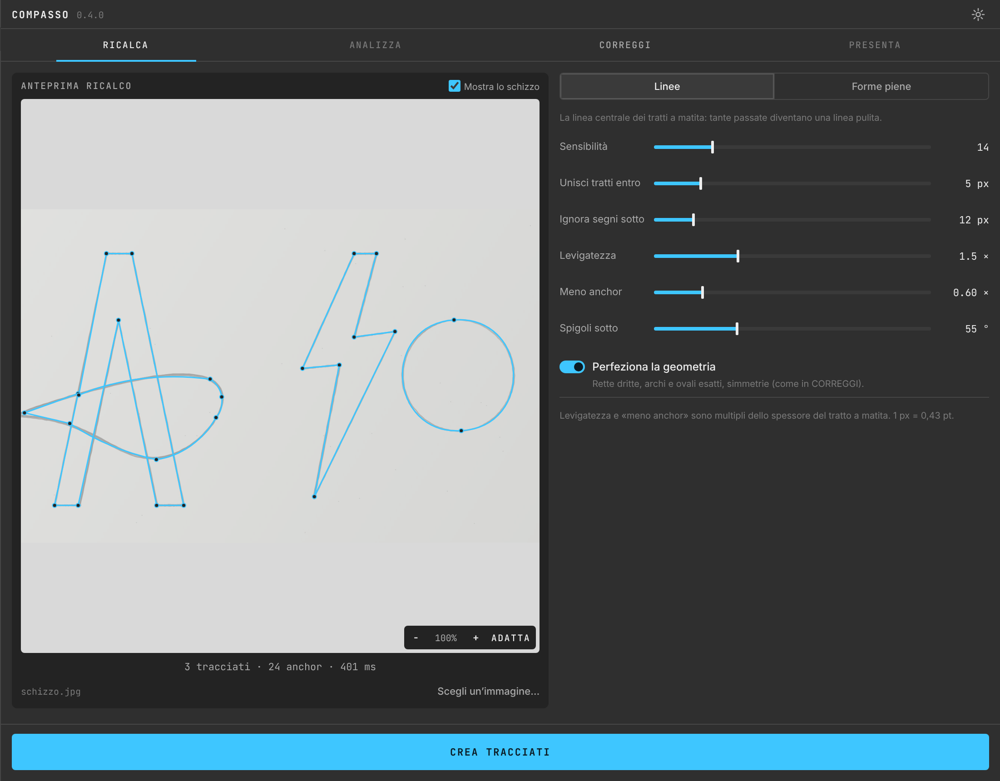
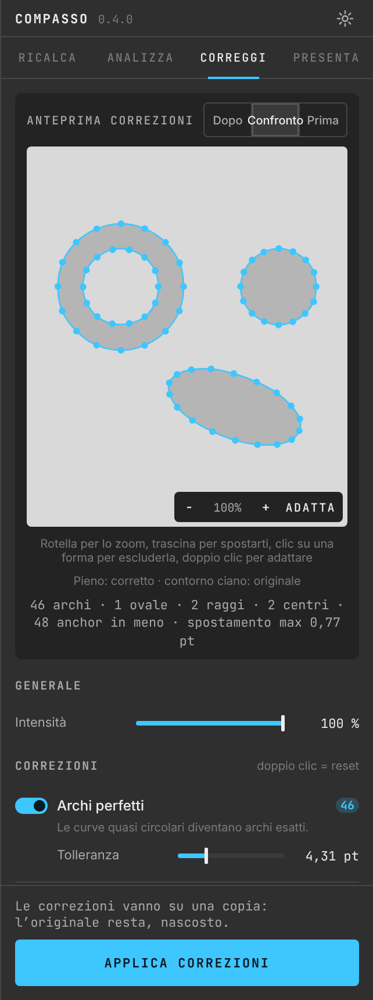

La costruzione che il logo nasconde.
Compasso legge le curve vere e le disegna su un layer dedicato, che rimuovi con un clic.



Plugin per Adobe Illustrator
Compasso ricalca il disegno a matita con linee pulite e il minimo di anchor, trova la costruzione nascosta nel logo e ne corregge le imprecisioni. Tutto dentro Illustrator.


Le schede del pannello seguono il lavoro su un logo, dal foglio al file finale.
Le tante passate di matita diventano una sola linea pulita. Rette dritte, curve sinuose, spigoli esatti, il minimo di anchor.
Cerchi, ovali, rette, assi di simmetria e unità x che le forme seguono. Più le quasi-coincidenze che l'occhio non vede.
Archi e ovali esatti, raggi uguali, simmetria, allineamenti. Su una copia, con l'anteprima prima e dopo.
Selezioni la foto dello schizzo in Illustrator e Compasso ne ricava i tracciati con pochi punti, ben distribuiti.

Ogni correzione ha il suo interruttore e la sua tolleranza. Il confronto mostra in azzurro l'originale e i punti spostati, e lo zoom arriva fino al singolo anchor.

Compasso legge le curve vere e le disegna su un layer dedicato, che rimuovi con un clic.

Se Windows mostra «PC protetto», scegli «Ulteriori informazioni» e poi «Esegui comunque». Per disinstallare: Impostazioni di Windows, App installate, Compasso.
Illustrator 2026 e successive, su Windows 10 e 11.
Solo quando lo chiedi: costruzione e ricalco vanno su layer dedicati, le correzioni su una copia. L'originale resta, e si ripristina con un clic.
Foto o scansioni in JPEG o PNG, inserite in Illustrator come immagini collegate o scelte dal disco. Più il foglio è uniforme, migliore è il risultato.
No. Lavora solo sul tuo computer, anche offline. «Segnala un problema» salva un file sul Desktop: decidi tu se mandarlo.
Italiano o inglese, dalle impostazioni del pannello.
Presenta: la tavola di presentazione del logo con la sua costruzione.